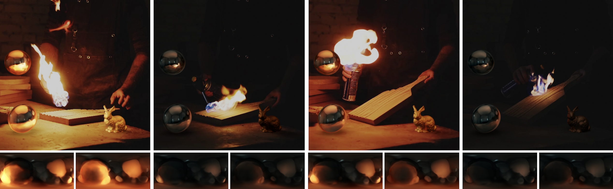

Spatiotemporally Consistent Indoor Lighting Estimation with Diffusion Priors
TL;DR: Our method can recover 4D lighting estimation from any monocular RGB video or image input.
Pipeline overview. We first fine-tune an inpainting diffusion model on small-scale synthetic datasets, which enables it to generalize well to real-world indoor scenes. Because ground-truth 4D lighting data are scarce, we train only on static scenes and, during optimization, lift the model’s predictions into a temporally consistent 4D lighting representation using our proposed method.
Abstract
Indoor lighting estimation from a single image or video remains a challenge due to its highly ill-posed nature, especially when the lighting condition of the scene varies spatially and temporally. We propose a method that estimates from an input video a continuous light field describing the spatiotemporally varying lighting of the scene. We leverage 2D diffusion priors for optimizing such light field represented as a MLP. To enable zero-shot generalization to in-the-wild scenes, we fine-tune a pre-trained image diffusion model to predict lighting at multiple locations by jointly inpainting multiple chrome balls as light probes. We evaluate our method on indoor lighting estimation from a single image or video and show superior performance over compared baselines. Most importantly, we highlight results on spatiotemporally consistent lighting estimation from in-the-wild videos, which is rarely demonstrated in previous works.
Spatially Varying Lighting Estimation from Image
Our method enables spatially varying lighting estimation from a single image. In the video below, we show on the left the estimating lighting as a chrome ball moving in space and show on the right the corresponding depth map on the right.
Try selecting different scenes:

Spatiotemporally Varying Lighting Estimation from Video
Our method enables lighting estimation from a single video of dynamic lighting conditions. In the video below, we show on the left the estimating lighting as a chrome ball moving in space and show on the right the corresponding depth map.
Try selecting different scenes:
Objects relighting results on real-world videos
The environment maps estimated by our method can be used to relight objects in the scene, enabling realistic object insertion and relighting in real-world videos.

